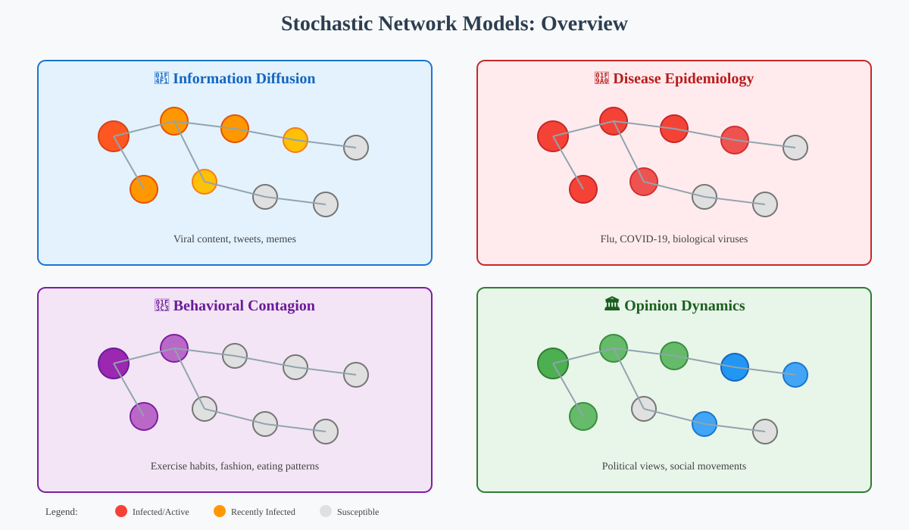
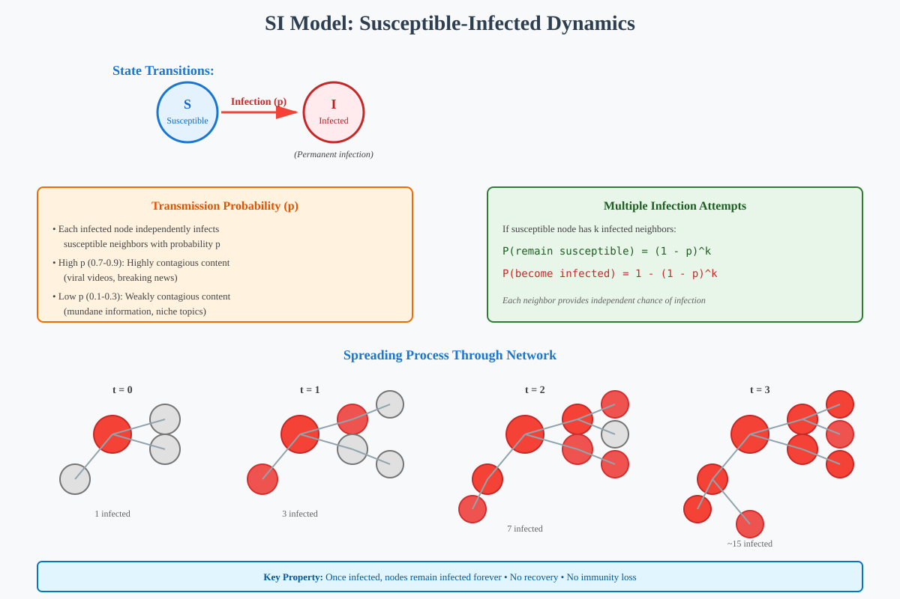
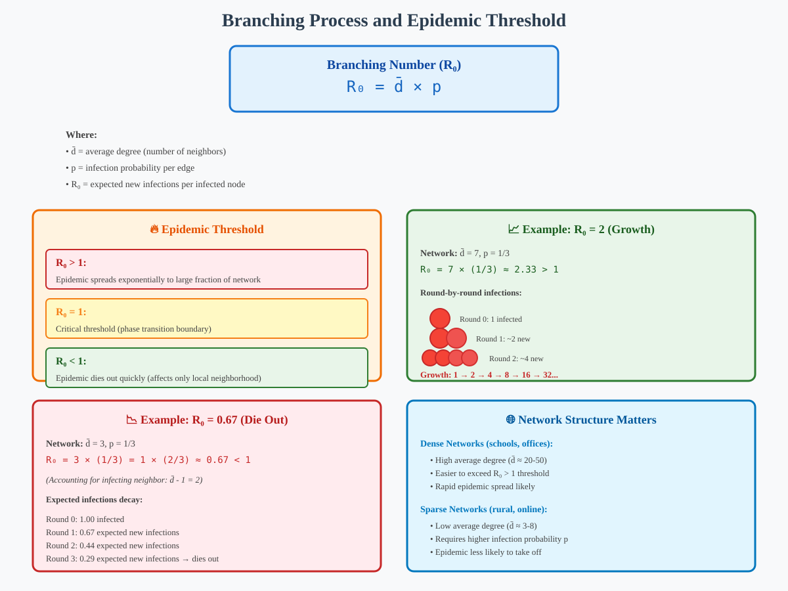
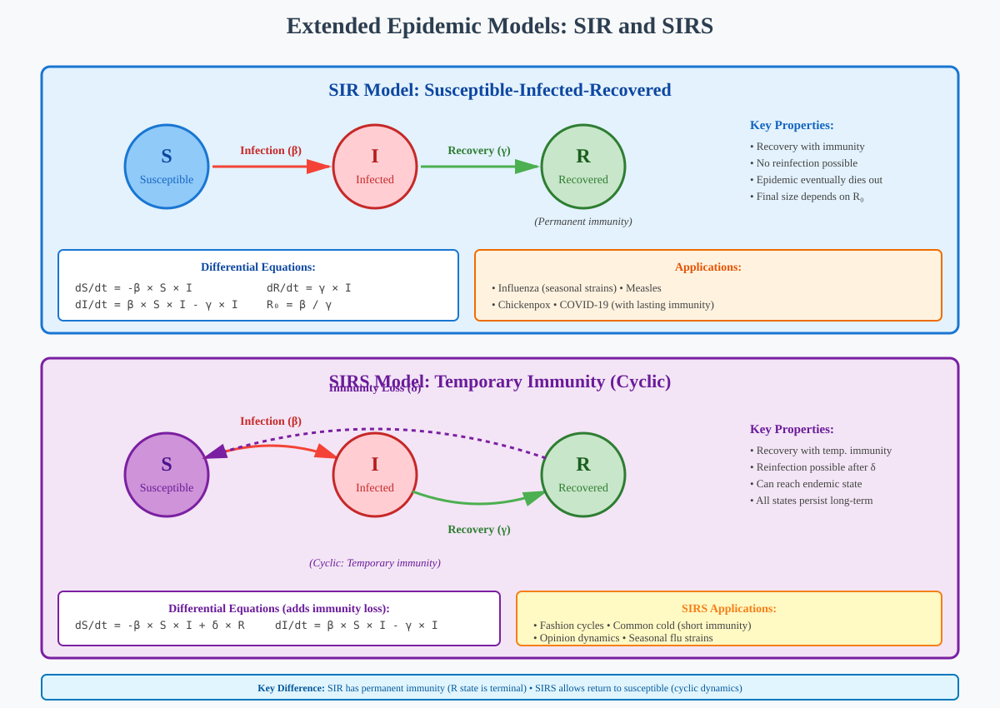

Stochastic Network Models: Epidemic and Contagion Processes
Quick Navigation
- Introduction to Stochastic Network Models
- Understanding the SI Model
- Network Dynamics and Branching Process
- Extended Models: SIR and SIRS
- Mathematical Framework
- Applications and Real-World Examples
- Interactive Code Examples
- References & Further Reading
Introduction to Stochastic Network Models
Stochastic network models provide a mathematical framework for understanding how information, diseases, behaviors, and opinions propagate through networks. These models, also known as epidemic or contagion models, capture the essential dynamics of spreading processes while remaining tractable for analysis.

Key Applications:
- Information Diffusion: Spread of tweets, viral videos, and memes through social networks
- Disease Epidemiology: Transmission of infectious diseases like influenza or COVID-19
- Behavioral Contagion: Propagation of exercise habits, eating patterns, and fashion choices
- Opinion Dynamics: Spread of political views and social movements
- Computer Security: Propagation of computer viruses and malware
Fundamental Questions:
- Predictability: Can we predict how a process will spread through a network?
- Scale: What determines whether a local outbreak becomes a global epidemic?
- Network Dependence: How do network properties affect spreading dynamics?
- Threshold Behavior: What conditions lead to epidemic vs. die-out scenarios?
Why Simplified Models?
While the biological details of disease transmission or the psychological factors in behavior adoption are complex, simplified models capture the macroscopic network-level behavior. This abstraction allows us to:
- Identify universal principles of spreading processes
- Make quantitative predictions about epidemic outcomes
- Design intervention strategies for disease control
- Understand information viral dynamics
Understanding the SI Model
The SI (Susceptible-Infected) model is the most fundamental epidemic model, providing the foundation for understanding contagion on networks.

Model Definition
State Space:
- S (Susceptible): Nodes that can be infected but are not currently infected
- I (Infected): Nodes that have been infected and remain infectious
Key Characteristics:
- Irreversible Infection: Once infected, nodes remain infected forever
- No Immunity: Suitable for diseases like cytomegalovirus (CMV) or herpes
- No Recovery: Infected nodes continuously attempt to infect neighbors
Transmission Mechanisms
Deterministic Model:
In the simplest setting, infected nodes deterministically infect all susceptible neighbors with certainty.
Probabilistic Model (More Realistic):
Each infected node infects each susceptible neighbor independently with probability p.
P(infection across edge) = p
Where:
p= transmission probability per contact- High
p→ highly contagious (e.g., hilarious viral content) - Low
p→ weakly contagious (e.g., boring content)
Information Diffusion Example
High Contagion (p ≈ 0.8):
- Truly hilarious presidential candidate parody
- Breaking major news story
- Emotionally resonant content
Low Contagion (p ≈ 0.2):
- Mundane or uninspiring content
- Niche interest topics
- Low-quality productions
Independent Infection Attempts
Key Model Assumption:
Each infected neighbor independently attempts to infect a susceptible node. If a node has multiple infected neighbors, it receives multiple independent infection opportunities.
Infection Probability with k Infected Neighbors:
P(remain susceptible) = (1 - p)^k
P(become infected) = 1 - (1 - p)^k
Network Dynamics and Branching Process
The spreading behavior of the SI model depends critically on the relationship between network structure (average degree) and infection probability.

Branching Number Concept
Definition:
The branching number represents the expected number of new infections caused by each infected node.
Branching Number = (Average Degree) × (Infection Probability)
R₀ = d̄ × p
Where:
R₀= basic reproduction number (branching number)d̄= average degree in the networkp= infection probability per edge
Epidemic Threshold
Critical Condition:
If R₀ > 1: Epidemic spreads to macroscopic fraction of network
If R₀ < 1: Epidemic dies out quickly
If R₀ = 1: Critical threshold (phase transition)
Example: Exponential Growth Scenario
Network Configuration:
- Average degree:
d̄ = 7(accounting for the infecting neighbor) - Infection probability:
p = 1/3 - Initial infected node with 6 susceptible neighbors
Round-by-Round Analysis:
Round 0:
- Infected nodes: 1
- Expected new infections: 6 × (1/3) = 2
Round 1:
- Newly infected: 2
- Each has ~6 additional neighbors
- Expected new infections: 2 × 6 × (1/3) = 4
Round 2:
- Newly infected: 4
- Expected new infections: 4 × 6 × (1/3) = 8
Growth Pattern:
Infected nodes: 1 → 2 → 4 → 8 → 16 → 32 → 64 → ...
Growth factor: 2ˣ (exponential growth)
Interpretation:
With R₀ = 2, the number of infected nodes doubles with each round, leading to rapid epidemic spread.
Example: Die-Out Scenario
Network Configuration:
- Average degree:
d̄ = 3 - Infection probability:
p = 1/3 - Expected infections per node: 2 × (1/3) = 2/3 < 1
Round-by-Round Analysis:
Round 0:
- Infected nodes: 1
- Expected new infections: 2 × (1/3) = 0.67
Round 1:
- Expected newly infected: 0.67
- Expected new infections: 0.67 × 2 × (1/3) ≈ 0.44
Round 2:
- Expected newly infected: 0.44
- Expected new infections: 0.44 × 2 × (1/3) ≈ 0.29
Decay Pattern:
Infected nodes: 1 → 0.67 → 0.44 → 0.29 → 0.19 → ...
Growth factor: (2/3)ˣ (exponential decay)
Interpretation:
With R₀ = 2/3 < 1, each generation produces fewer infections than the previous, causing inevitable die-out.
Network Structure Impact
Dense Networks (Schools, Offices):
- High average degree
- Facilitates rapid spreading
- Example: Flu in a classroom setting
Sparse Networks (Rural Communities):
- Low average degree
- Hinders epidemic spread
- Requires higher infection probability for epidemic
Configuration Model Validity:
The branching number analysis applies broadly to random networks where:
- Neighbors infect independently
- Degree distribution is known
- Local tree-like structure approximation holds
Extended Models: SIR and SIRS
The SI model can be extended to incorporate recovery and immunity dynamics, creating more realistic epidemic models.

SIR Model: Susceptible-Infected-Recovered
State Transitions:
S → I → R
State Definitions:
- S (Susceptible): Can be infected
- I (Infected): Currently infectious
- R (Recovered): Immune and cannot be reinfected
Biological Interpretation:
Models diseases where recovery confers permanent immunity:
- Influenza (seasonal strains)
- Measles
- Chickenpox
- COVID-19 (with lasting immunity)
Key Dynamics:
- Infection: Susceptible nodes become infected through contact with infected neighbors
- Recovery: Infected nodes recover at rate
γand gain permanent immunity - Immunity: Recovered nodes never return to susceptible state
Modified Branching Number:
R₀ = (d̄ × p × τ) / γ
Where:
τ= average infectious periodγ= recovery rate- Recovery competes with transmission
SIRS Model: Temporary Immunity
State Transitions:
S → I → R → S (cyclic)
Additional Parameter:
δ= rate at which immunity wanes (recovered nodes become susceptible again)
Applications:
Fashion Cycles:
- Trends come and go
- Old fashions become "retro" and popular again
- Cyclical adoption patterns
Seasonal Diseases:
- Common cold
- Some strains of influenza (with mutation)
- Immunity is temporary
Opinion Dynamics:
- Political views can shift over time
- People may return to previous positions
- Cyclic opinion changes
Comparison Table
| Feature | SI Model | SIR Model | SIRS Model |
|---|---|---|---|
| Recovery | No | Yes | Yes |
| Immunity | No | Permanent | Temporary |
| Endemic State | Always spreading | Dies out | Cyclic |
| Applications | CMV, herpes, information | Flu, measles | Fashion, some diseases |
| Steady State | All infected | Susceptible + Recovered | All states persist |
Mathematical Dynamics
SIR System (Continuous Time):
dS/dt = -β × S × I
dI/dt = β × S × I - γ × I
dR/dt = γ × I
Where:
β= transmission rateγ= recovery rateR₀ = β / γ= basic reproduction number
SIRS System (Continuous Time):
dS/dt = -β × S × I + δ × R
dI/dt = β × S × I - γ × I
dR/dt = γ × I - δ × R
Where:
δ= immunity loss rate- Enables endemic equilibrium
Mathematical Framework
Epidemic Threshold Theory
Fundamental Theorem:
For random networks with independent edge activations:
Epidemic Threshold: R₀ = d̄ × p = 1
Interpretation:
- R₀ > 1: Epidemic spreads to O(n) nodes (macroscopic fraction)
- R₀ < 1: Epidemic affects O(log n) nodes (dies out)
- R₀ = 1: Critical point (phase transition)
Branching Process Analysis
Generation-Based Model:
E[I_t+1] = R₀ × I_t
Where:
I_t= number of infected nodes at time tE[·]= expected value- Assumes tree-like local structure
Extinction Probability:
For R₀ < 1, the probability that the epidemic dies out starting from a single infected node:
P(extinction) = 1
For R₀ > 1:
P(extinction) < 1
P(epidemic) = 1 - P(extinction) > 0
Network Effects
Degree Distribution Impact:
The branching number for heterogeneous networks:
R₀ = p × E[D(D-1)] / E[D]
Where:
D= degree random variableE[D(D-1)]= second moment of degree distribution- High-degree nodes (hubs) accelerate spreading
Scale-Free Networks:
For power-law degree distributions P(k) ~ k^(-γ):
- If
γ ≤ 3: No epidemic threshold (R₀ undefined) - Hubs ensure epidemic spread even for small
p
Temporal Dynamics
SI Model Growth (Early Phase):
I(t) ≈ I₀ × e^((R₀-1)×t)
Where:
I₀= initial infected population- Exponential growth when R₀ > 1
SIR Model Peak:
Maximum infection occurs when:
S = 1 / R₀
Final Size Equation (SIR):
R_∞ = 1 - e^(-R₀ × R_∞)
Where:
R_∞= final proportion of recovered individuals- Transcendental equation (no closed form)
Applications and Real-World Examples
🦠 Disease Epidemiology
Influenza in Schools:
- Network: Dense contact network (classroom, hallways)
- Model: SIR with R₀ ≈ 1.5-2.0
- Intervention: Vaccination reduces susceptible population
- Outcome: High attack rates without intervention
COVID-19 Pandemic:
- Network: Global transportation and local contact networks
- Model: SEIR (with Exposed state) R₀ ≈ 2.5-4.0
- Interventions: Social distancing, masks, lockdowns reduce R₀
- Superspreading: Events with high-degree nodes drive outbreaks
📱 Information Diffusion
Twitter Retweet Cascades:
- Network: Follower graph (directed)
- Model: SI with time-decaying infection probability
- Factors: Content quality, timing, influencer involvement
- Viral Threshold: Depends on network position and content appeal
YouTube Videos:
- Network: Recommendation algorithm + social sharing
- Model: SI with reinforcement (multiple exposures increase p)
- Prediction: Early growth rate predicts final view count
🏃 Behavioral Contagion
Exercise Habits:
- Network: Friendship networks
- Model: SIS (Susceptible-Infected-Susceptible) with spontaneous adoption
- Findings: Close friends' behaviors strongly influence adoption
- Threshold: Multiple adopting friends increase probability
Obesity Spread:
- Network: Social ties (friends, family, coworkers)
- Research: Christakis & Fowler (2007) Framingham Heart Study
- Finding: Person's obesity risk increases if friends become obese
- Mechanism: Social norms and behavior modeling
💻 Computer Security
Malware Propagation:
- Network: Internet topology (AS-level or router-level)
- Model: SI with patching (becomes SIR)
- Defense: Rapid patching reduces infectious period
- Strategy: Protect high-degree nodes (servers, routers)
🏛️ Opinion Dynamics
Political Polarization:
- Network: Social media and real-world interactions
- Model: Competitive spreading (multiple "diseases")
- Dynamics: Echo chambers amplify opinions
- Challenge: Intervention strategies to reduce polarization
Case Study: COVID-19 Intervention Modeling
Baseline Scenario:
- R₀ = 3.0 (no intervention)
- Expected final infection: ~75% of population
Intervention 1: Reduce Contact (Social Distancing):
- Reduces average degree by 50%
- New R₀ = 1.5
- Expected final infection: ~40%
Intervention 2: Masks + Social Distancing:
- Reduces both average degree and infection probability
- New R₀ = 0.75
- Epidemic dies out (few infections)
Key Insight:
Small reductions in R₀ near threshold have dramatic effects on epidemic outcomes.
Interactive Code Examples
🔬 Simulation and Visualization
SI Model Simulation on Networks:

Features:
- Simulate SI model on various network topologies
- Visualize spreading dynamics over time
- Experiment with different R₀ values
- Compare exponential growth vs. die-out scenarios
Code Snippet:
import networkx as nx
import numpy as np
import matplotlib.pyplot as plt
def simulate_SI(G, p, initial_infected=1, max_steps=100):
"""
Simulate SI model on network G
Parameters:
- G: NetworkX graph
- p: infection probability
- initial_infected: number of initially infected nodes
- max_steps: maximum simulation steps
"""
n = len(G)
infected = set(np.random.choice(n, initial_infected, replace=False))
infected_counts = [len(infected)]
for step in range(max_steps):
if len(infected) == n:
break
new_infected = set()
for node in infected:
for neighbor in G.neighbors(node):
if neighbor not in infected and np.random.rand() < p:
new_infected.add(neighbor)
infected.update(new_infected)
infected_counts.append(len(infected))
return infected_counts
# Create network and simulate
G = nx.erdos_renyi_graph(n=1000, p=0.01)
avg_degree = 2 * len(G.edges) / len(G)
infection_prob = 0.15
# Compute R0
R0 = avg_degree * infection_prob
print(f"R₀ = {R0:.2f}")
# Run simulation
infected_over_time = simulate_SI(G, infection_prob)
# Plot results
plt.plot(infected_over_time)
plt.xlabel('Time Step')
plt.ylabel('Number of Infected Nodes')
plt.title(f'SI Model Simulation (R₀ = {R0:.2f})')
plt.show()
SIR Model with Recovery:

Features:
- Implement SIR model with infection and recovery
- Visualize S, I, R populations over time
- Explore impact of recovery rate on epidemic duration
- Compute final epidemic size
📊 Network Analysis Tools
Recommended Libraries:
- NetworkX: Network creation and analysis
- EoN (Epidemics on Networks): Specialized epidemic simulation library
- Mesa: Agent-based modeling framework
- NetLogo: Visual agent-based modeling (desktop application)
Useful Resources:
References & Further Reading
📚 Foundational Papers
Network Epidemiology:
- Newman, M. E. J. (2002). "Spread of epidemic disease on networks." Physical Review E, 66(1), 016128. arXiv:cond-mat/0205009
- Pastor-Satorras, R., & Vespignani, A. (2001). "Epidemic spreading in scale-free networks." Physical Review Letters, 86(14), 3200. arXiv:cond-mat/0010317
Information Diffusion:
- Centola, D., & Macy, M. (2007). "Complex contagions and the weakness of long ties." American Journal of Sociology, 113(3), 702-734.
- Watts, D. J., & Dodds, P. S. (2007). "Influentials, networks, and public opinion formation." Journal of Consumer Research, 34(4), 441-458.
Behavioral Contagion:
- Christakis, N. A., & Fowler, J. H. (2007). "The spread of obesity in a large social network over 32 years." New England Journal of Medicine, 357(4), 370-379.
- Fowler, J. H., & Christakis, N. A. (2008). "Dynamic spread of happiness in a large social network." British Medical Journal, 337, a2338.
📖 Books
- Easley, D., & Kleinberg, J. (2010). Networks, Crowds, and Markets: Reasoning About a Highly Connected World. Cambridge University Press. Free online
- Newman, M. E. J. (2010). Networks: An Introduction. Oxford University Press.
- Kiss, I. Z., Miller, J. C., & Simon, P. L. (2017). Mathematics of Epidemics on Networks: From Exact to Approximate Models. Springer. arXiv:1706.03522
- Anderson, R. M., & May, R. M. (1991). Infectious Diseases of Humans: Dynamics and Control. Oxford University Press.
🎓 Course Materials
- Stanford CS224W: Machine Learning with Graphs - http://web.stanford.edu/class/cs224w/
- Cornell INFO 2040: Networks - https://courses.cit.cornell.edu/info2040_2020fa/
- Santa Fe Institute: Complex Systems Summer School Materials
🔬 Software and Tools
- EoN (Epidemics on Networks): Python package for simulating epidemics - GitHub
- NetworkX: Python package for network analysis - Website
- Graph-tool: Efficient network analysis library - Website
- NetLogo: Agent-based modeling environment - Website
Document Information:
- Topic: Stochastic Network Models
- Target Audience: AI/ML engineers, researchers, students in network science
- Prerequisites: Basic probability, graph theory, Python programming
- Estimated Reading Time: 25-30 minutes
- Last Updated: October 2025